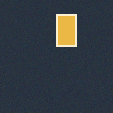

BUILD · TRAIN · INFER · EVALUATE
ニューラルネットワークは、本当に学習したのか。
Unit 01〜04で学んだ要素を統合した、1クラスのYOLOX-Nano。実際にPyTorchで600回ずつ重みを更新した結果を、1枚学習と8枚学習で比較します。
128×128 / 1 class / PyTorch / AdamW / 合成長方形 / 600 updates

PROCEDURALLY GENERATED INPUTモデルは実際にPyTorchで重みを更新しています。入力・GTは合成長方形であり、セルフィーや実在人物は学習に使用していません。公開サイトは保存した学習ログとBBoxを再生する静的ビューアです。ブラウザ上では学習を実行しません。
INTERACTIVE TRAINING TRACE
条件を変えて、予測とAP50を読み解く
スナップショットは実学習の記録です。選択した学習条件・更新回数がすべての図と数値に反映されます。
Train AP50—
Validation AP50—
Val TP / FP / FN（score ≥ .25）—
更新時のLoss—
検証画像上の実予測
GT：黄 / Prediction：緑記録データを読み込み中…
LossとAP50の推移
固定seedの実学習記録 Training AP50 Validation AP50
この点の意味
学習前のモデルは対象を認識できません。更新回数を動かし、推論時の変化を見てください。
学習条件を揃えた比較
モデル構造・乱数seed・更新回数を揃え、学習画像の枚数だけ変更した実験です。評価対象は共通の未使用合成画像6枚です。
| 600更新時 | 学習AP50 | 検証AP50 | TP / FP / FN |
|---|
何が「モデルを学習させる」ことなのか
① Forward → raw prediction② SimOTA → positive samples③ L = 5 · (1 − IoU²) + BCE(obj) + BCE(cls)④ loss.backward() → ∂L/∂θ⑤ optimizer.step() → 新しい重み θ′⑥ 評価モード → Decode / NMS / AP50
実装の簡略化：合成1クラス・1画像につき1 GT・batch 1・独立した評価6枚。公式YOLOXのCOCO学習手順や実物体検出性能の再現ではありません。
TRY IT YOURSELF
次は、同じ処理を自分のPyTorchで作る。
7つの穴埋め課題を完成させ、あなたの環境で重み更新・推論・AP50を再計算してください。モデル重みはサイトでは配布していません。